今回使用するパッケージは
MASSはデフォルトパッケージだが、更新したバージョンのデータセットを用いるので、インストールする。
# 持ってないパッケージはインストールする
targetPackages <- c("ggplot2", "dplyr", "reshape2","MASS")
newPackages <- targetPackages[!(targetPackages %in% installed.packages()[, "Package"])]
if (length(newPackages)) install.packages(newPackages, repos = "http://cran.us.r-project.org")
for (package in targetPackages) library(package, character.only = T)関数近似を例にとり, テストデータに対する誤り率が最も小さくなるようなモデル選択を説明する.
今, 未知の関数が次式で与えられてるとしよう.
\[ f(x) = 0.5 + 0.4\sin(2\pi x) +\varepsilon = h(x) + \varepsilon,\\ \varepsilon\sim N(0,0.05) \]
ノイズの含まれた観測値から未知の関数\(h(x)\)を知りたい. \(h(x)\)は未知なので\(p\)次多項式による曲線近似によって推定する.
\[ y(x, a) = a_0 + a_1 x + a_2 x^2 + \cdots + a_p x^p, ~~~ a = (a_0, a_1, a_2, \ldots, a_p )^T \] 多項式の係数\(a\)は最小２乗法により求めることができる.
\(x\)として区間\((0,1)\)から等間隔に11点をサンプリングしたとする.
#乱数の種の設定、以降発生する乱数は全員一緒のハズ
set.seed(101)
# 区間[0,1]を11分割した系列
x <- seq(0,1, length = 11)
# そこからyを発生
y <- 0.5+0.4*sin(x*2*pi) + rnorm(11,sd=sqrt(0.05))
# ggplotするためにデータフレームにまとめる
sample_data <- data.frame(x = x, y = y)
# 真の関数のプロット準備
dx <- seq(0,1, length=100)
y.true <- 0.5+0.4*sin( dx*2*pi)true_data <- data.frame(x = dx, y = y.true)
ggplot() +
geom_line(data = true_data, aes(x=x, y= y,color = "True")) +
geom_point(data = sample_data, aes(x=x, y= y,color = "Sample")) +
theme_bw()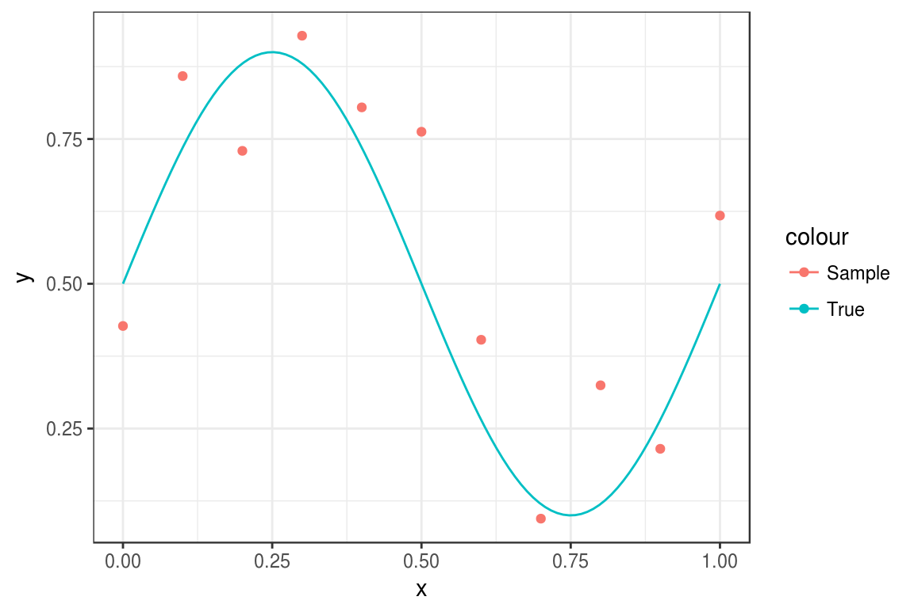
先ほどサンプリングしたxとyから、三次式の回帰を行う
\[ y(x, a) = a_0 + a_1 x + a_2 x^2 + a_3 x^3, ~~~ a = (a_0, a_1, a_2, a_3 )^T \]
non.linear.regression<- function(x, y , order){
# p次多項式の準備
X <- cbind(1, sapply(1:order, function(x,a) a^x, a=x))
df <- data.frame(y, X)
# 非線形回帰
lm.out <- lm(y~X-1, data=df)
# 回帰した式で、学習の際にしようした点のy値を確認(yの予測値)
fit <- lm.out$fitted
dx <- seq(0,1, length=100)
X <- cbind(1, sapply(1:order, function(x, a) a^x, a = dx))
fit.h <- as.numeric(X %*% lm.out$coeff)
list(fit=fit, fit.hx=fit.h)
}# 三次式に対して回帰する
fit.p3 <- non.linear.regression(x, y ,order=3)
fit_data <- data.frame(x = dx, y = fit.p3$fit.hx)
ggplot() +
geom_line(data = true_data, aes(x=x, y= y,color = "True")) +
geom_point(data = sample_data, aes(x=x, y= y,color = "Sample")) +
geom_line(data = fit_data, aes(x=x, y= y,color = "Estimate")) +
theme_bw()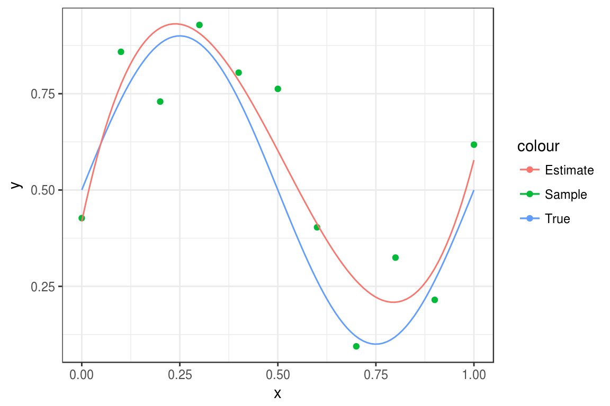
1次、3次、6次、10次式の非線形回帰を2回づつ行なう
fit.p1 <- non.linear.regression(x, y ,order=1)
fit.p3 <- non.linear.regression(x, y ,order=3)
fit.p6 <- non.linear.regression(x, y ,order=6)
fit.p10 <- non.linear.regression(x, y ,order=10)
fit_data <- data.frame(x = dx,
p1 = fit.p1$fit.hx,
p3 = fit.p3$fit.hx,
p6 = fit.p6$fit.hx,
p10 = fit.p10$fit.hx) %>% melt(id="x")
x <- seq(0,1, length = 11)
# 区間[0,1]を11分割した系列
y <- 0.5+0.4*sin(x*2*pi) + rnorm(11,sd=sqrt(0.05))
#plot(x,y)
sample_data2 <- data.frame(x = x, y = y)
fit.p1 <- non.linear.regression(x, y ,order=1)
fit.p3 <- non.linear.regression(x, y ,order=3)
fit.p6 <- non.linear.regression(x, y ,order=6)
fit.p10 <- non.linear.regression(x, y ,order=10)
fit_data2 <- data.frame(x = dx,
p1 = fit.p1$fit.hx,
p3 = fit.p3$fit.hx,
p6 = fit.p6$fit.hx,
p10 = fit.p10$fit.hx) %>% melt(id="x")ggplot() +
geom_line(data = true_data, aes(x=x, y= y,color = "True")) +
geom_point(data = sample_data, aes(x=x, y= y,color = "pattern1")) +
geom_point(data = sample_data2, aes(x=x, y= y,color = "pattern2")) +
geom_line(data = fit_data, aes(x=x, y= value, color = "pattern1"),linetype=2) +
geom_line(data = fit_data2, aes(x=x, y= value, color = "pattern2"),linetype=3) +
#geom_point(data = pre_data, aes(x=x, y= value, color = variable)) +
facet_wrap(~variable,scales = "free")+
theme_bw() #+ theme(legend.position = "none")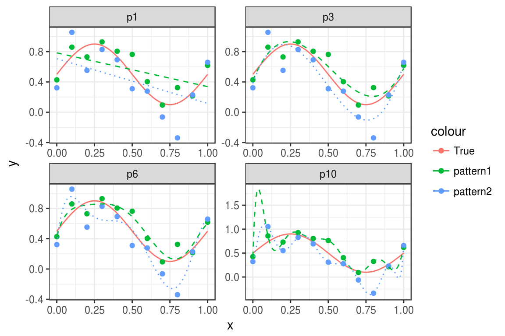
このように, \(p=1\)の場合は, データから大きく外れいている(バイアスが大きい)
逆に，\(p=10\)の場合は,データにぴったり当てはまっているが、二本の推定結果で大きく結果が異なる(分散が大きい)
このようにバイアスを小さくすれば分散が大きくなり, 逆に分散を小さくすれば, バイアスが大きくなる現象をバイアス・分散トレードオフといい, 汎化能力を決める大きな要因となる.
バイアスと分散を100個のデータ・セットから求めてみる.
\[ E_D \{ (y(x; D) -h(x))^2 \} =\\ \left(E_D \{ y(x; D\}- h(x) \right)^2 + E_D \{ (y(x; D) -E_D\{ y(x;D)\})^2 \} \]
trade.off<-function(order){
bias.var.trade.off <- function(order){
x <- seq(0,1, length = 11) # 区間[0,1]を11分割した系列
y <- 0.5+0.4*sin(x*2*pi) + rnorm(11,sd=sqrt(0.05))
X <- cbind(1, sapply(1:order, function(x,a) a^x, a=x))
df <- data.frame(y, X)
lm.out <- lm(y~X-1, data=df)
fit <- lm.out$fitted
y.true <- 0.5+0.4*sin(x*2*pi)
data.frame(fit=fit, y.true=y.true, y=y)
}
replicate(100, bias.var.trade.off(order) ) -> out
y.mat <- sapply(1:100, function(x) out[,x]$y)
fit.mat <- sapply(1:100, function(x) out[,x]$fit)
y.true.mat <- sapply(1:100, function(x) out[,x]$y.true)
## バイアス項
bias.p <- sum((apply(fit.mat,1, mean) - y.true.mat[,1])^2)
## 分散項
var.p <- sum(apply(fit.mat,1,var))
## MSE
mse.p <- var.p+bias.p
#mse.p <-
return(c(mse=mse.p, var.p=var.p, bias.p =bias.p))
}out<- sapply(1:10,trade.off)
ggplot(
data.frame(
cbind(t(out),p = c(1:10)) %>% data.frame() %>% melt(id="p")),
aes(x=p,y=value,color=variable))+
geom_line(size=1.2) + theme_bw() + theme(legend.position = "bottom")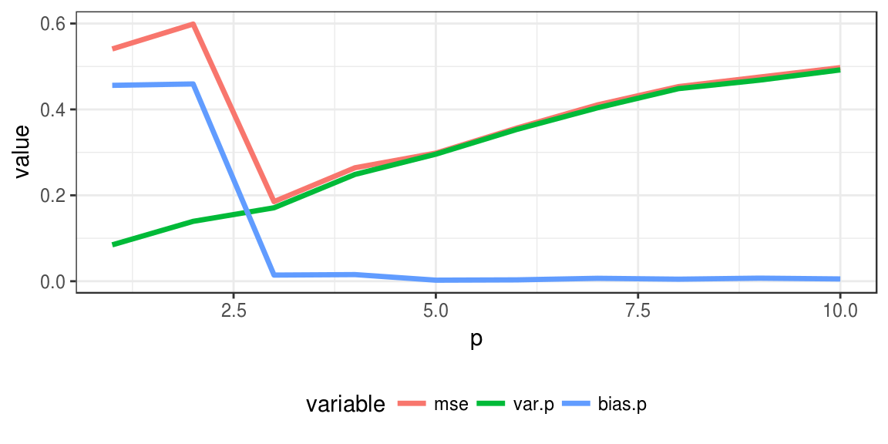
この図より, 最適な多項式次数は, 平均２乗誤差が最小となる\(p=3\)を選択すれば良い.
入力データ\(x\)は, その特徴に応じて様々な性質をもつであろう. そこで, 分析に先立ち, あらかじめ入力データの顕著な特性が大きく識別結果に影響しないように, データの前処理をすることが一般的である. 前処理には, 平均0, 分散１に基準化する標準化や, 変数間の相関関係を排除した無相関化, 標準化と無相関化を合わせた白色化等が用いられる.
Rのデータセット、アヤメデータを用いる。
head(iris) Sepal.Length Sepal.Width Petal.Length Petal.Width Species
1 5.1 3.5 1.4 0.2 setosa
2 4.9 3.0 1.4 0.2 setosa
3 4.7 3.2 1.3 0.2 setosa
4 4.6 3.1 1.5 0.2 setosa
5 5.0 3.6 1.4 0.2 setosa
6 5.4 3.9 1.7 0.4 setosasummary(iris) Sepal.Length Sepal.Width Petal.Length Petal.Width
Min. :4.300 Min. :2.000 Min. :1.000 Min. :0.100
1st Qu.:5.100 1st Qu.:2.800 1st Qu.:1.600 1st Qu.:0.300
Median :5.800 Median :3.000 Median :4.350 Median :1.300
Mean :5.843 Mean :3.057 Mean :3.758 Mean :1.199
3rd Qu.:6.400 3rd Qu.:3.300 3rd Qu.:5.100 3rd Qu.:1.800
Max. :7.900 Max. :4.400 Max. :6.900 Max. :2.500
Species
setosa :50
versicolor:50
virginica :50
花弁の長さPetal.Length、その幅Petal.Widthを用いる。
平均と共分散行列は
mu <- colMeans(cbind(iris$Petal.Length,iris$Petal.Width))
Sigma <- var(cbind(iris$Petal.Length,iris$Petal.Width))mu[1] 3.758000 1.199333Sigma [,1] [,2]
[1,] 3.116278 1.2956094
[2,] 1.295609 0.5810063最初に生のデータをプロットする
data <- data.frame(Petal.Length = iris$Petal.Length,
Petal.Width = iris$Petal.Width,
types = c(rep("s",50),rep("c",50),rep("v",50)))
summary(data) Petal.Length Petal.Width types
Min. :1.000 Min. :0.100 c:50
1st Qu.:1.600 1st Qu.:0.300 s:50
Median :4.350 Median :1.300 v:50
Mean :3.758 Mean :1.199
3rd Qu.:5.100 3rd Qu.:1.800
Max. :6.900 Max. :2.500 ggplot(data=data,aes(x = Petal.Length,
y = Petal.Width,
label = types,
color = types))+
geom_point(alpha=0)+
geom_text(aes(label=types),hjust=0, vjust=0)+
theme_bw() + theme(legend.position = "none")+
ggtitle("Raw data")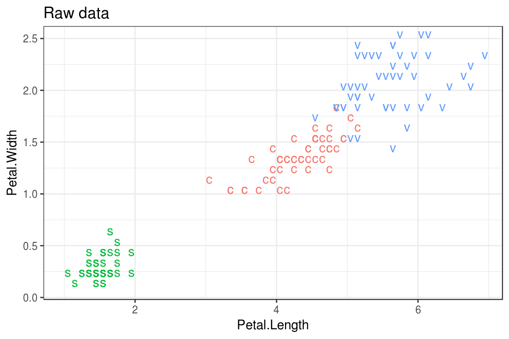
標準化してプロットする
#scaleだけで標準化が行える
data_stand <- data.frame(Petal.Length = iris$Petal.Length %>% scale(),
Petal.Width = iris$Petal.Width %>% scale(),
types = c(rep("s",50),rep("c",50),rep("v",50)))
summary(data_stand) Petal.Length Petal.Width types
Min. :-1.5623 Min. :-1.4422 c:50
1st Qu.:-1.2225 1st Qu.:-1.1799 s:50
Median : 0.3354 Median : 0.1321 v:50
Mean : 0.0000 Mean : 0.0000
3rd Qu.: 0.7602 3rd Qu.: 0.7880
Max. : 1.7799 Max. : 1.7064 ggplot(data=data_stand,aes(x = Petal.Length,
y = Petal.Width,
label = types,
color = types))+
geom_point(alpha=0)+
geom_text(aes(label=types),hjust=0, vjust=0)+
theme_bw() + theme(legend.position = "none")+
ggtitle("Standardization")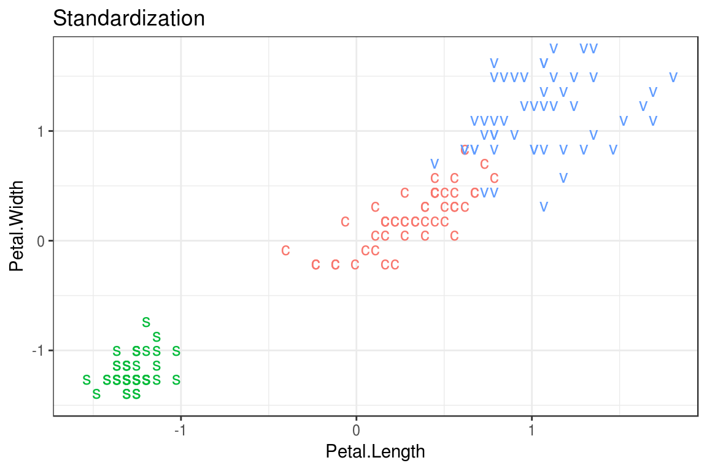
正規直交行列は次のように求める.
# アヤメデータの花弁の長さ幅の分散共分散行列の固有値, 固有ベクトルを求める.
eigen(var(cbind(iris$Petal.Length,iris$Petal.Width)))$values
[1] 3.66123805 0.03604607
$vectors
[,1] [,2]
[1,] -0.9217777 0.3877188
[2,] -0.3877188 -0.9217777# 固有ベクトルは, 方向は関係ないので(-)を掛けても同じ.
S <- -eigen(var(cbind(iris$Petal.Length,iris$Petal.Width)))$vectors
S [,1] [,2]
[1,] 0.9217777 -0.3877188
[2,] 0.3877188 0.9217777# S^t xが無相関になる線形変換です.
trans.S <-t( t(S) %*% rbind(iris$Petal.Length,iris$Petal.Width))
# 変換後の共分散行列は対角成分が0,対角要素が固有値になっている. var(trans.S)
var(trans.S) [,1] [,2]
[1,] 3.661238e+00 5.170473e-17
[2,] 5.170473e-17 3.604607e-02# 回転後のデータのプロット
data_Nocorr <- data.frame(trans.S,
types = c(rep("s",50),rep("c",50),rep("v",50)))
colnames(data_Nocorr) <- colnames(data_stand)
summary(data_Nocorr) Petal.Length Petal.Width types
Min. :0.9993 Min. :-0.8807 c:50
1st Qu.:1.5524 1st Qu.:-0.4689 s:50
Median :4.4944 Median :-0.3585 v:50
Mean :3.9290 Mean :-0.3515
3rd Qu.:5.4377 3rd Qu.:-0.2275
Max. :7.2520 Max. : 0.2349 ggplot(data=data_Nocorr,aes(x = Petal.Length,
y = Petal.Width,
label = types,
color = types))+
geom_point(alpha=0)+
geom_text(aes(label=types),hjust=0, vjust=0)+
theme_bw() + theme(legend.position = "none")+
ggtitle("No Correlation")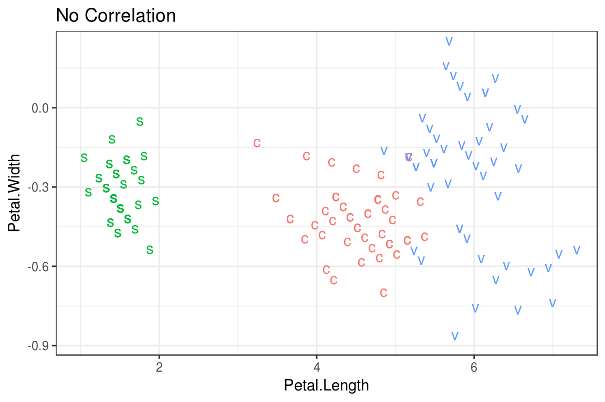
# 固有値の平方根の行列とその逆行列を計算
Lambda <- sqrt(diag(eigen(var(
cbind(iris$Petal.Length,iris$Petal.Width)))$values))
inv.Lambda <- solve(Lambda)
# 白色化変換
whi.S <- t(inv.Lambda %*% t(S) %*%
(rbind(iris$Petal.Length,iris$Petal.Width)-mu) )
var(whi.S) [,1] [,2]
[1,] 1.000000e+00 2.554238e-16
[2,] 2.554238e-16 1.000000e+00# 回転後のデータのプロット
data_white <- data.frame(whi.S,
types = c(rep("s",50),rep("c",50),rep("v",50)))
colnames(data_white) <- colnames(data_stand)
summary(data_white) Petal.Length Petal.Width types
Min. :-1.5311 Min. :-2.78739 c:50
1st Qu.:-1.2421 1st Qu.:-0.61810 s:50
Median : 0.2955 Median :-0.03646 v:50
Mean : 0.0000 Mean : 0.00000
3rd Qu.: 0.7885 3rd Qu.: 0.65326
Max. : 1.7367 Max. : 3.08878 ggplot(data=data_white,aes(x = Petal.Length,
y = Petal.Width,
label = types,
color = types))+
geom_point(alpha=0)+
geom_text(aes(label=types),hjust=0, vjust=0)+
theme_bw() + theme(legend.position = "none")+
ggtitle("White")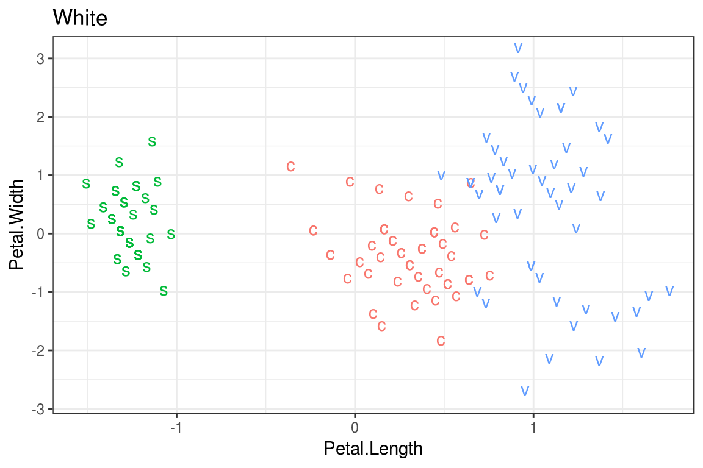
まとめてプロット
plot_d <- rbind(data.frame(data,pro = "Raw"),
data.frame(data_stand,pro = "Standard"),
data.frame(data_Nocorr,pro = "Nocorre"),
data.frame(data_white,pro = "White"))
ggplot(data=plot_d,aes(x = Petal.Length, y = Petal.Width, label = types, color = types))+
geom_point(alpha=0) + geom_text(aes(label=types),hjust=0, vjust=0)+
facet_wrap(~pro,scales = "free") + theme_bw() + theme(legend.position = "none")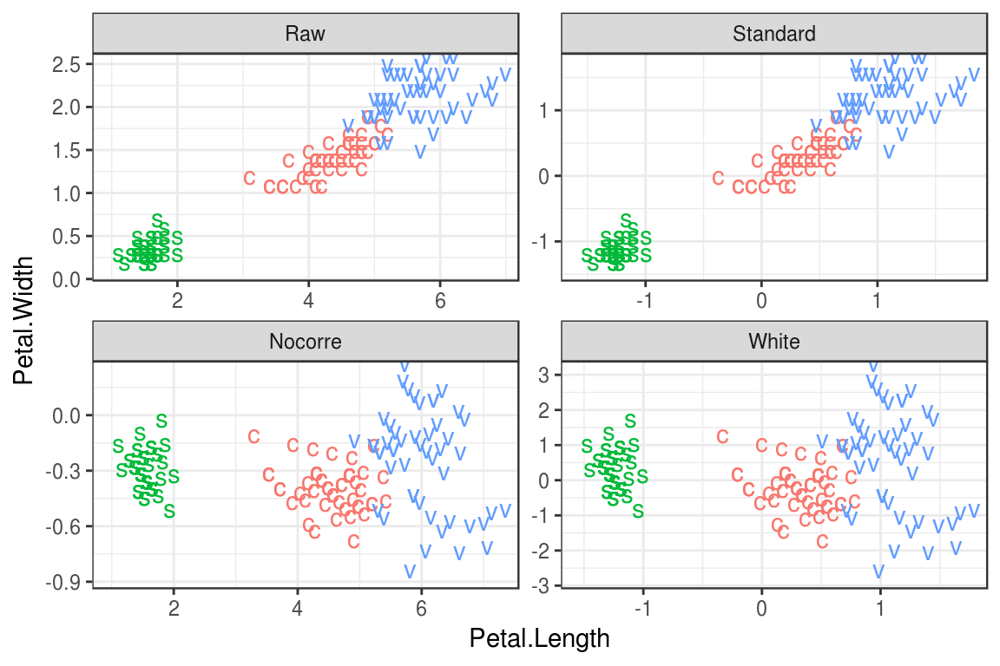
[0,1]の範囲で等間隔に20個の配列xを準備し、次の関数に従う乱数をxの点で発生させ、発生した乱数と関数を並べてプロットしなさい。
\[ f(x) = 0.5 + 0.4\cos(2\pi x) - \sin(2\pi x) +\varepsilon = h(x) + \varepsilon, \\ \varepsilon\sim N(0,1) \]
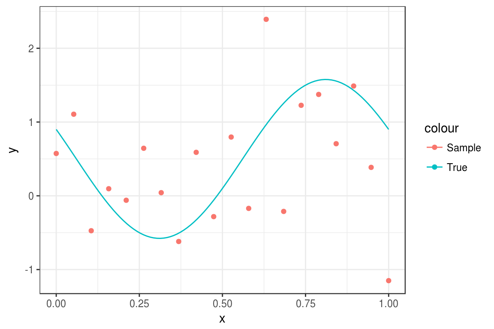
課題1の式について、配列xを用いて、p次多項式による回帰を\(p=1\sim 10\)にて100回づつ行い、実際の値との差分(mse)の平均が最も小さくなるpを見つけ、そのpでの近似曲線を一つプロットしなさい。
\(p\)次多項式
\[ y(x, a) = a_0 + a_1 x + a_2 x^2 + \cdots + a_p x^p, \\ a = (a_0, a_1, a_2, \ldots, a_p )^T \]
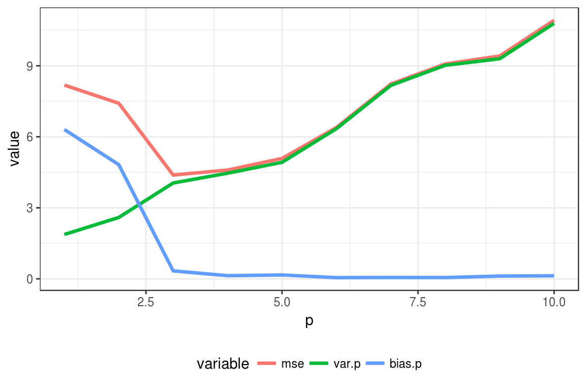
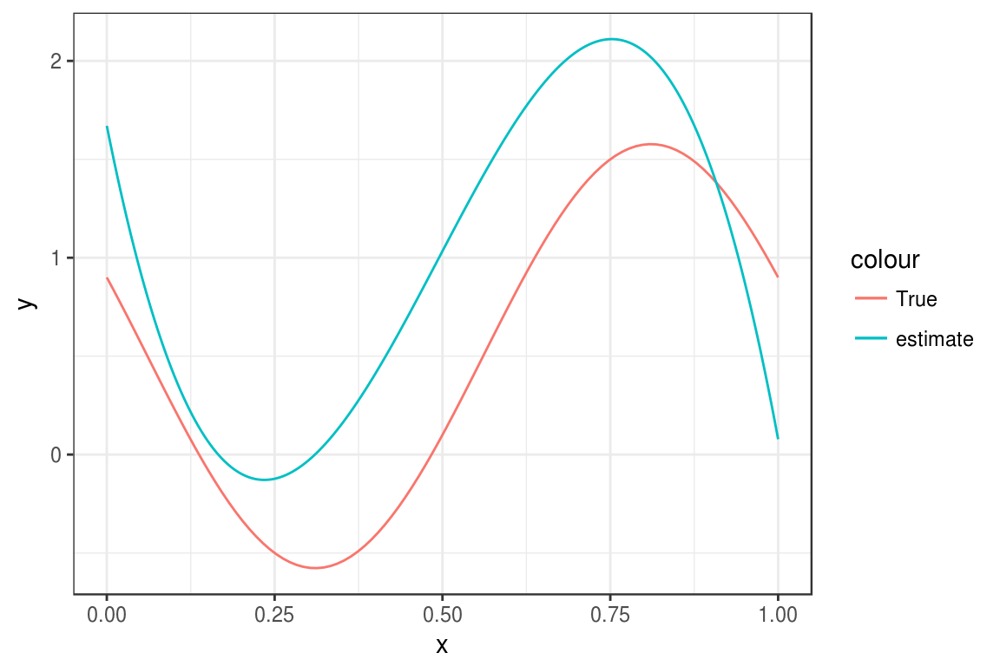
RのMASS パッケージには, 200名のピマ・インディアンの女性の糖尿病に関する学習データ Pima.tr と 332 名のテストデータ Pima.te がある.
学習データについて、x軸bmi、y軸ageとして、糖尿病かどうかで色付けしてプロットせよ。
また、標準化、無相関化、白色化を行い、同じようにプロットせよ。
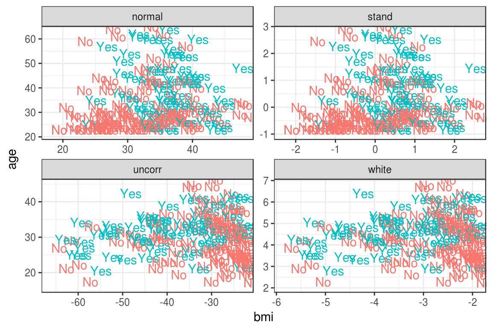